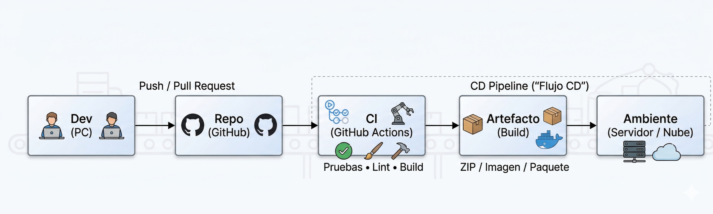

CI/CD con GitHub Actions
CI/CD (Integración continua y despliegue/entrega continua) con GitHub Actions
En sistemas basados en servicios (y microservicios), el código cambia con frecuencia y cada servicio puede evolucionar a su propio ritmo. Si cada cambio se prueba y se despliega “a mano”, es fácil cometer errores: olvidar una prueba, subir una versión incorrecta o publicar un servicio sin validar.
CI/CD aporta una respuesta arquitectónica: automatiza el camino desde que un desarrollador sube código al repositorio hasta que ese código se valida (CI) y, en muchos casos, se entrega o despliega de forma controlada (CD). En esta guía verás cómo se representa ese flujo y cómo se implementa un ejemplo mínimo con GitHub Actions.
Objetivos de Aprendizaje
- 💬
Explicar el rol de CI/CD dentro de una arquitectura basada en servicios: cómo automatiza pruebas, construcción (build) y despliegue para publicar servicios de forma controlada.
- ↔️
Diferenciar Integración Continua (CI) y Entrega/Despliegue Continuo (CD) con ejemplos simples y resultados esperados.
- 👀
Reconocer los elementos básicos de un pipeline en GitHub Actions (workflow, trigger, job, steps, runner, artefactos y secrets) usando vocabulario claro.
- 🛠️
Configurar un workflow mínimo de CI en GitHub Actions para una API (por encima): instalar dependencias y ejecutar una validación básica (lint o test).
CI/CD (Integración continua y despliegue/entrega continua) con GitHub Actions: rol en la arquitectura y automatización con GitHub Actions.
El rol de CI/CD en la arquitectura
CI/CD se entiende mejor si lo ubicas como una “línea de producción” del software. En arquitectura, conecta tres piezas: (1) el repositorio de código (GitHub), (2) la automatización de validaciones (CI) y (3) la entrega/despliegue controlado (CD). El objetivo es reducir riesgos: que un cambio pase por chequeos repetibles antes de llegar a un ambiente donde lo usen personas reales.
Figura 1. CI/CD con GitHub Actions dentro del ciclo de desarrollo y despliegue.

Lectura del diagrama: un push o un pull request activa un workflow. El workflow ejecuta validaciones (por ejemplo, pruebas) y genera un resultado. Si todo sale bien, puede producir un artefacto (por ejemplo, un paquete o una imagen) y, si la organización lo permite, desplegarlo a un ambiente.
Conceptos clave (vocabulario simple)
Estos términos se repiten en cualquier pipeline. Aprenderlos te ayuda a comprender qué está pasando cuando “pasa o falla” una ejecución.
Integrar cambios frecuentemente y validarlos automáticamente (pruebas, lint, build).
Entregar o desplegar cambios de forma controlada a un ambiente.
Secuencia de etapas que se ejecutan en orden (validar → construir → entregar/desplegar).
Archivo `.yml` que define qué se ejecuta y cuándo.
Evento que inicia el workflow (push, pull_request, manual).
Bloque de trabajo dentro del workflow.
Paso dentro de un job (comando o acción).
Máquina que ejecuta los jobs (ej.: ubuntu-latest).
Archivo generado por el pipeline (zip, reporte, paquete).
Dato sensible (token/clave) que no debe escribirse en el código.
CI vs CD: ¿en qué se diferencian?
| Aspecto | CI (Integración continua) | CD (Entrega/Despliegue continuo) |
|---|---|---|
| Objetivo | Detectar errores pronto y asegurar calidad básica. | Publicar cambios de forma controlada (con menos riesgo). |
| Salida típica | Tests/lint/build exitoso. | Servicio actualizado en un ambiente (staging o producción). |
| Ejemplo simple | Al hacer push, correr validaciones. | Si CI pasa, desplegar con permisos/aprobación. |
El pipeline mínimo para una API (por encima)
Un pipeline mínimo se puede entender como 4 etapas. No siempre están todas automatizadas al 100%, pero ayudan a ordenar el proceso.
| Etapa | ¿Qué hace? | Evidencia de que pasó |
|---|---|---|
| 1) Integrar | Subir cambios al repositorio (push) o proponer cambios (pull request). | Commit/PR en GitHub. |
| 2) Validar (CI) | Instalar dependencias y correr validaciones básicas (lint o tests). | Workflow en verde (✅). |
| 3) Construir (Build) | Generar un artefacto: paquete, zip o imagen (si aplica). | Artefacto publicado o build exitoso. |
| 4) Entregar/Desplegar (CD) | Actualizar un ambiente (staging/prod) de forma controlada. | Versión nueva desplegada y verificada. |
GitHub Actions: estructura mínima de un workflow
Un workflow se guarda en la ruta .github/workflows/. Es un archivo YAML (.yml). Lo más importante es entender: (1) cuándo se ejecuta (on), (2) en qué máquina (runs-on) y (3) qué pasos (steps) hace.
| Trigger | ¿Cuándo se usa? |
|---|---|
| push | Cada vez que subes cambios a una rama (útil para CI). |
| pull_request | Cuando abres o actualizas un PR (ideal antes de unir cambios). |
| workflow_dispatch | Ejecución manual (validación o despliegue controlado). |
Ejemplo mínimo (CI) para una API Node.js: instala dependencias y corre pruebas (o una validación).
Archivo: .github/workflows/ci.yml
Nota: si tu proyecto no tiene tests todavía, se puede reemplazar “npm test” por “npm run lint” o por un comando de validación básico. La meta es comprender el flujo y observar la ejecución en la pestaña Actions.
CD (despliegue) como idea: qué se automatiza y qué se protege
En muchos equipos, el despliegue a producción no se deja automático sin control. Se usan ambientes (staging/prod), revisiones y aprobaciones. Para desplegar se requieren credenciales (secrets) que deben guardarse en GitHub y no escribirse en el código.
Ejemplo conceptual (no obligatorio en clase): si CI pasa, un job de CD podría copiar un artefacto a un servidor o publicar una imagen. Lo clave es entender: CD = automatizar la entrega/despliegue con permisos y controles.
Cuestionarios o actividades complementarias
Actividad 1. Diagrama del pipeline en tu arquitectura (teórica)
Propósito: ubicar CI/CD dentro de la arquitectura de tu sistema y reconocer qué se valida y qué se despliega.
Instrucciones:
Dibuja un diagrama similar a la Figura 1, pero adaptado a tu caso (tu API del Tema 2).
Marca: repositorio, CI (validaciones), artefacto y ambiente (staging o producción).
En 5–8 líneas, explica dónde encaja Docker (Tema 1) si tu servicio se despliega en contenedores.
Entregable: diagrama + explicación corta.
Actividad 2. Configurar un workflow mínimo (práctica por encima)
Propósito: ejecutar CI automáticamente en GitHub Actions.
Instrucciones:
Crea un repositorio en GitHub con tu API (o usa uno existente).
Crea la carpeta .github/workflows/ y agrega el archivo ci.yml (basado en el ejemplo).
Haz push a main y verifica en la pestaña “Actions” que el workflow se ejecuta.
Toma una captura del workflow en verde (✅) y pega el enlace del repositorio.
Entregable: enlace del repo + captura de la ejecución exitosa.
Actividad 3. Mini simulador: construye un pipeline mínimo
Arma una secuencia coherente de CI para una API en GitHub Actions.
Escenario
1. ¿Qué evento inicia el workflow?
2. ¿Qué validación mínima ejecuta CI?
3. Si todo sale bien, ¿qué evidencia esperas?
Actividad 4. Relaciona conceptos clave del pipeline
Selecciona primero el concepto y luego su definición correspondiente.
Evaluación
Responde el quiz de verificación y comprueba tu comprensión de CI/CD con GitHub Actions.
{kind=link}